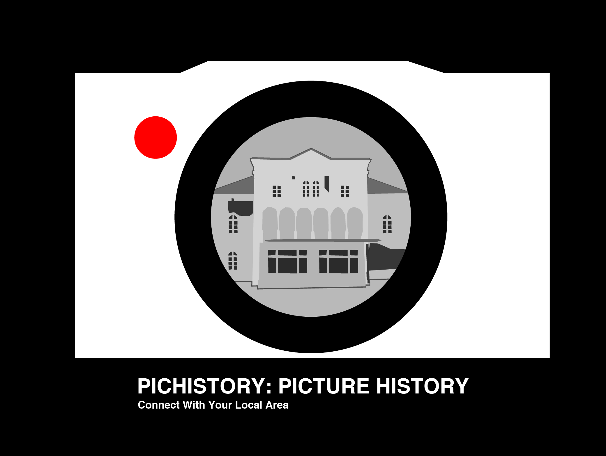
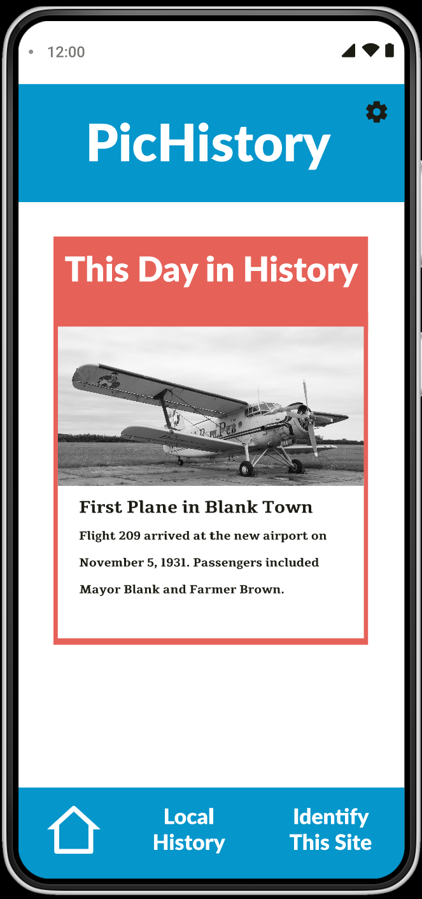
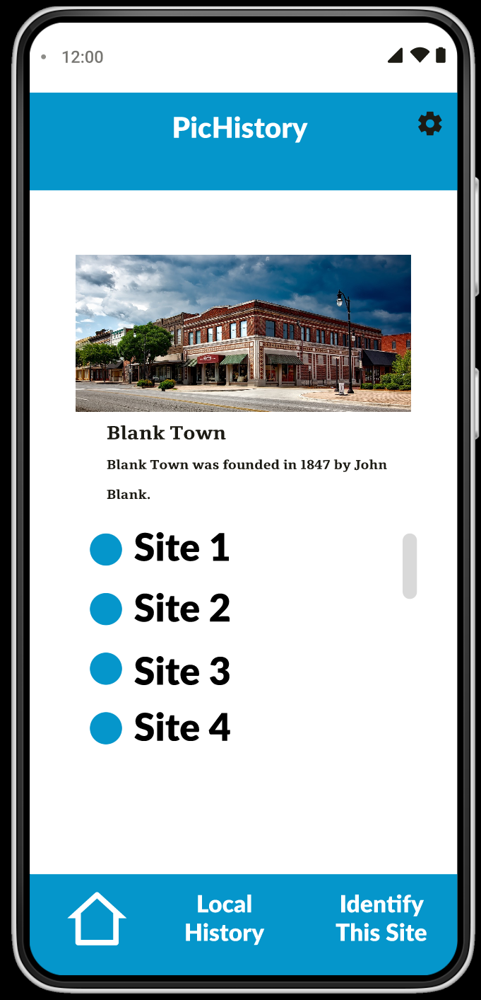
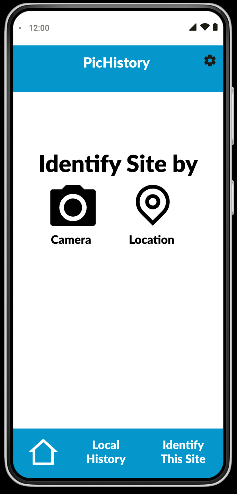
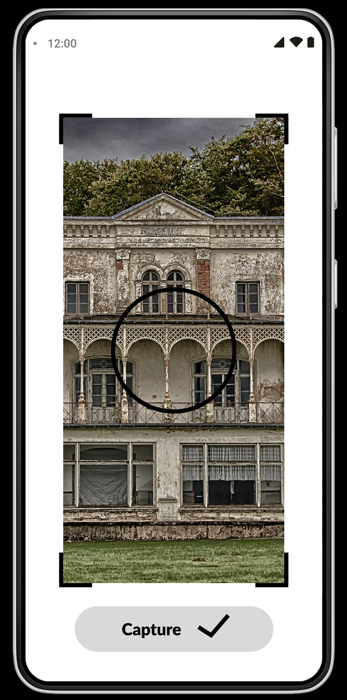

PicHistory User Experience Case Study
PicHistory
Have you ever looked at a building and wondered how old it is or what happened there? PicHistory is a potential app that seeks to answer that question. Now, other apps promise to do similar tasks, but PicHistory shall be designed from the start to have the best user experience possible.
Ethnographic Research
I conducted ethnographic research in order to understand how people seek information about the history of their local area. Those I surveyed were all college students as those are the people I have the most access to. I also probed these people on their interest in an app that would connect them to local history.
Major takeaways
- The ways they seek out information about local history include searching the internet, going to the library, and talking with locals.
- None of them had used apps that do this type of thing or knew they existed.
Persona
Based on my Ethnographic research I created a persona of a potential client.
Alex Jackson 22
Alex Jackson is a college student who likes learning about local history. He has never heard of PicHistory and hasn’t used any similar apps(b). He mainly uses the internet to learn about his local area's history(a).
Goal
Learn about the history of his local area.
Concerns
He doesn’t have all that much time to invest in searching for history.
Tasks
Get local history based on general location
Get the history of a building
Update any information that he knows more than the app about
Scenarios
When it comes to creating an app, preparing good scenarios is a necessary prerequisite for usability testing. These scenarios were created using the info I compiled in the persona.
Scenario 1
You are a college-aged person who is interested in local history. You found PicHistory from an ad on the internet. The ad claimed that the app specialized in connecting people to local history. After downloading the app, you open it up for the first time.
Get local history based on general location.
Scenario 2
After having the app for a while you get curious if the app can identify an old-looking building you see nearby.
Get the history of the building.
Scenario 3
You find that the app has very little information about site 3. You know that a famous inventor, Joe Blank, used to live there.
Update site 3.
Usability Testing
For the purpose of developing the basic functions of the PicHistory app, I ran three rounds of usability testing. Between each round of testing, I improved the prototype to make it simpler to use, based on the feedback I got from the people who tested it.
Round 1
For the first round of usability testing, I used an extremely primitive paper prototype to test the basic functions I planned for the app.
Based on my first round
- My link names were not clear.
- It was unclear whether the individual historical sites could be clicked.
- The Add More Info button didn’t really belong in the main nav menu.
- The way I represented filler text was easily mistaken for a form.
- On the Identify Site page, it was unclear to some users why the camera and location buttons were there. After talking with some users, I decided a simple “by” added to the page would make it more clear.
Round 2
For the second round, I used a new version of my paper prototype.
Based on my second round
- Some people want the add more information button in the nav bar, however, most users preferred the button being in the individual Historical Site pages.
- For some reason, people will click on add more information without being prompted to do so and before they have any information to add.
- Some people think it would be a good idea to add the ability to upload documents to the Add More Information form.
- Someone suggested I should add the ability to choose the town you get local history about.
Round 3
For round three I took my round 2 paper prototype and digitized it. I didn’t add the new features as that is not what I was testing at the time.
Based on round 3
- One of the links was broken.
- While most people realize the historical sites are clickable some took a while to figure that out.
- Someone mixed up the Add Site with the Add Information buttons.
- Another person took a while to find the Add Information button.
- All people who tested the app thought it was a positive experience.


A Quick Run Through of Scenario 3

Here is a quick run through of scenario 3 with the digital prototype. First you go into local history and select site 3. Then click add information. Add the information to the field.
App Design
After reviewing my usability tests I made some improvements to the app. I added a feature to choose which city the information will be based on. I also added some simple colors to help the design.
   Conclusions
Based on what has happened so far I will test my final design. I might also put in the work to create a web version of the app to test demand.